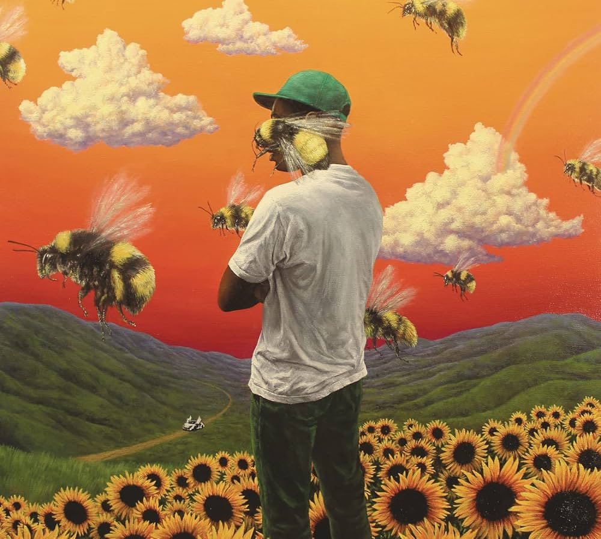
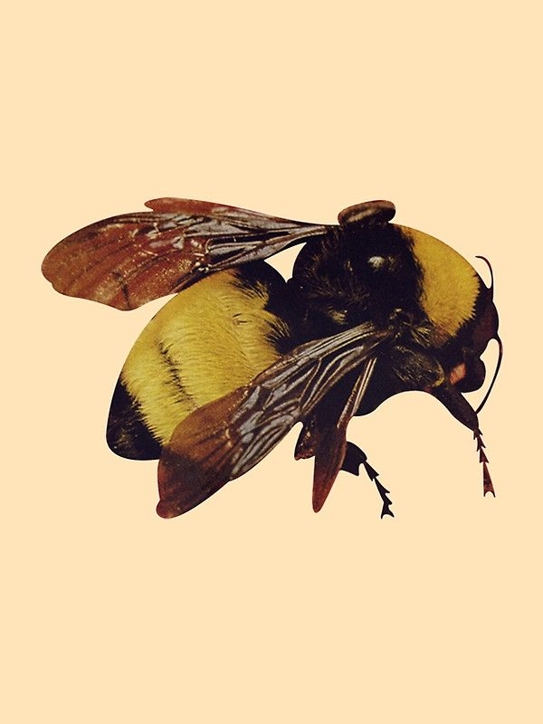

inicio
Lançado em julho de 2017, Flower Boy (também conhecido como Scum Fuck Flower Boy) representa o ponto de virada definitivo na carreira de Tyler, The Creator. Após anos sendo criticado pelo conteúdo agressivo de seus primeiros discos, Tyler apresentou um trabalho introspectivo, melódico e vulnerável. Musicalmente, o álbum abandona os sintetizadores claustrofóbicos e abraça arranjos complexos de jazz, soul e neo-soul.
O impacto do álbum foi imenso, sendo indicado ao Grammy de Melhor Álbum de Rap. Flower Boy é amplamente elogiado por sua honestidade sobre solidão, fama e, principalmente, sobre a sexualidade de Tyler, que é abordada de forma sutil e poética em várias faixas. O projeto marcou a transição de Tyler de um "garoto rebelde" para um dos produtores e compositores mais respeitados de sua geração.
Abaixo, alguns pontos fundamentais sobre a obra:
Flower Boy não é apenas um álbum de rap, mas uma experiência sensorial que prova a maturidade de Tyler como artista total. Ao trocar a raiva pela vulnerabilidade e a crueza pela melodia, ele conseguiu criar uma obra que ressoa com qualquer pessoa que já se sentiu deslocada ou solitária em meio ao brilho do sucesso.
Primeira capa:

Segunda capa:

A Capa Principal (Pintura): A versão mais famosa é uma pintura deslumbrante do artista Eric White. Ela mostra Tyler em um campo de girassóis sob um céu alaranjado e surrealista, cercado por abelhas gigantes. Essa arte captura perfeitamente a atmosfera "ensolarada" e melancólica do disco.
A Capa Alternativa (Abelha): A segunda versão é mais minimalista, focando em um close-up de uma abelha em um fundo amarelo vibrante. Esta versão foi lançada principalmente nas edições de vinil e destaca um dos símbolos mais fortes desta era, representando o trabalho árduo e a doçura da produção musical de Tyler.
A música mais famosa de Flower Boy é "See You Again", uma faixa com a participação de Kali Uchis. A letra fala sobre um "amor de sonho", onde Tyler prefere dormir para encontrar a pessoa amada em sua imaginação. Ela mistura Jazz com Pop e marcou a mudança do artista para um estilo mais suave e melódico.